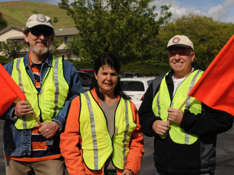
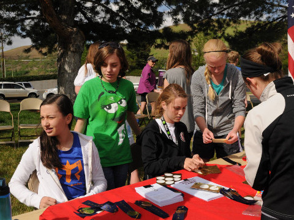

Event Details
The 13th annual High Fives 5K & Kids Dash will take place on Saturday May 7, 2016
- The 5K distance is 5,000 meters.
- The Kids Dash distance is 1/5 of a mile.
- Both races are run at elevations of over 5,000 feet.
- Starts and finishes near the LDS Church parking lot on 18th Ave.
In addition...
- There are NO entry fees.
- Race photos are taken at the start and finish lines.
- Root beer floats and a post race BBQ dinner provided for all runners and spectators.
- Awards given to top five finishers and age division winners.
2016 Race Info
The 13th annual High Fives 5K & Kids Dash will take place on Saturday May 7, 2016
2015 Race Results and Photos
The 12th annual High Fives 5K took place on Sat. May 9th 2015. Race results and photos will be posted shortly.
"There is no failure in running or in life, as long as you keep moving. It's not about speed and gold medals. It's about refusing to be stopped." - Amby Burfoot, Runners World
5K Course Map
Kids Dash
The One Fifth (1/5th) Mile Kids' Dash will take place just before the High Fives 5K. The Sprint will begin on 17th Avenue and proceed to the finish line near the church parking lot where the 5K will later begin.
Any boys or girls 10 years old or younger may participate in this short race. The race will begin at 5:35 pm. Registration for the sprint will begin at 5:05 pm.

Volunteers
 The High Fives 5K and Kids Dash would not be possible without the assistance of numerous volunteers. We appreciate all of the volunteers in the neighborhood who have been so kind to help with this wonderful neighborhood activity. Again this year we will need many volunteers to assist with the following responsibilities:
- Race Registration
- Race Video/Photographers
- Gatorade/Water Tables
- Motorized Escort for Race Leaders (thank you Jim Ostler)
- Race Timers
- Traffic Controlers
- Finish Line Tag Remover
- Finish Line Race Recorders (2)
- Finish Line Medallion Providers (2)
- Post Race Dinner (many helpers wanted)
Thank you volunteers for your invaluable service at this annual neighborhood event!
Previous Races
We have had many great past races. A little bit about each year is recorded in the race history. All time course records for overall male and female runners and each age division are available.
2015: Results | Division Winners | Kids Dash Results | Photos
2014: Results | Division Winners | Kids Dash Results | Photos
2013: Results | Division Winners | Kids Dash Results | Photos
2012: Results | Division Winners | Photos
2011: Results | Division Winners | Photos
2010: Results | Division Winners | Kids Dash Results | Photos
2009: Results | Division Winners | Kids Dash Results | Photos
2008: Results | Division Winners | Photos
2007: Results | Division Winners | Photos
2006: Results | Division Winners | Photos
2004: Results | Photos
2003: Results | Division Winners | Photos